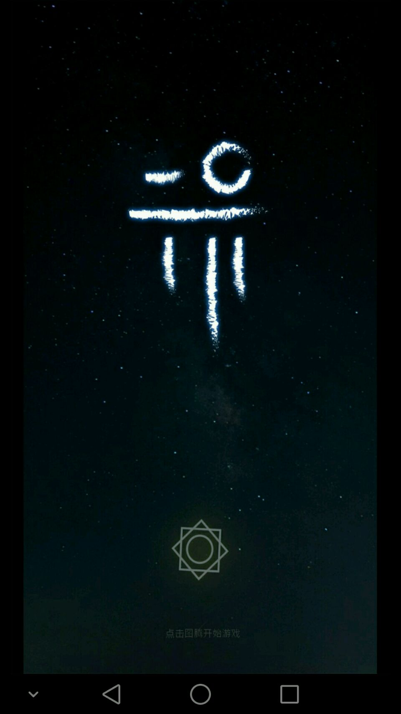

中国独立AR游戏《行界：零》 正版安卓上线网易游品位
2016-11-09
曾一天新增用户达到15万爆红的中国独立AR游戏《行界：零》，今日将正式上线网易游品位平台。你只需花费7元就能在游品位上下载《行界：零》安卓正版手游，体验这款基于现实地理位置，寻找遗迹碎片拯救世界的解谜类益智游戏。
玩不了pokemon go?来玩《行界：零》
如果问起当下最火爆的户外游戏是什么，估计很多小伙伴的第一反应还是让中国众玩家非常蛋疼的《Pokemon Go》。这不，一款超棒并且我们能玩的真实地理位置解谜手游――《行界：零》，正版安卓上线啦!玩《行界：零》的后遗症比起《Pokemon Go》可以说是有过之而无不及，还没体验过的你难道没有一丢丢心动?

《行界：零》是一款拯救世界的解谜类益智游戏。在广袤的宇宙中，有一个叫做行界的美丽星球。这颗星球上的生物经历了三个纪元的文明，隐族、圣族和空族相继导演着这世界上的故事。一次意外使行界迎来了末日，曾经存在的辉煌文明毁于一旦。而你作为主角却在行界的角落苏醒，成为了唯一的幸存者，想要在这破乱的世界里找到一线生机，就需要对这颗星球曾经存在的文明进行探索，准备好开启你作为救世英雄的这段迷茫孤独的旅程了吗?
基于现实地理位置 寻找失落的遗迹碎片
《行界：零》是由国内大学生团队独立制作的一款基于现实地理位置的手机寻宝解谜类游戏。所以在游戏中，你需要打开手机自身的GPS，否则是没法玩的哦。接着你可以根据指示拿着手机，去寻找隐藏在你周围的遗迹，位于玩家附近的遗迹将会在手机界面上显现出来，当玩家走到遗迹点附近便会自动搜集。待在原地是不会发现遗迹的呢。游戏需要你走出家门，真正的走到街道、公园中去寻找散落在世界上的遗迹。
游戏中大一点的箭头三角形符号是你所在位置，箭头所指方向是你现在手机对着的方向，旋转手机箭头，方向也会旋转，当箭头指着屏幕正上时，你的方向是正对着北方。小一点的三角形是遗迹所在位置，你需要移动你的位置(现实中走路)，根据地理知识去寻找遗迹。游戏中一共有7大类49个遗迹，每个遗迹都有自己的故事，把遗迹的故事连起来，又是另一个波澜壮阔的故事。
世界末日带走了一切，万物都已经化为零，被散开的物品成为了一个个灵气。而化身为神秘幸存者的你，只需花费7元就能在网易游品位上下载《行界：零》安卓正版手游，然后搜集这些碎片，并将它们一一还原，来拯救这个乱世吧!游品位作为网易出品的一款全球精品游戏推荐平台，致力于连接好的游戏与用户，让你品味单纯游戏的快乐!